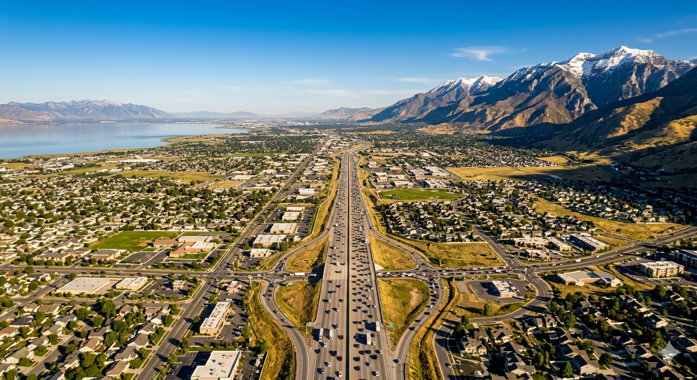

These are real-world drive times on I-15 northbound during morning rush. Not Google Maps optimistic times.
Lehi
Tech corridor
0min
American Fork
North county
0min
Pleasant Grove
Mid-county
0min
Provo and Orem
County center
0min
Saratoga Springs
Westside
0min
Spanish Fork
South county
0min
Local Tip
These times assume you're driving. The FrontRunner commuter rail runs from Provo through the county to Salt Lake City with stops in Orem, Provo, American Fork, Lehi, and more. Free parking at all stations. If you work downtown Salt Lake and hate driving, run the math on FrontRunner before you pick your neighborhood.
A significant portion of Utah County's workforce doesn't commute to Salt Lake at all. Adobe, Qualtrics, Domo, Vivint, and dozens of other major employers are based in Lehi and Draper along the I-15 tech corridor. If you're relocating for a tech job, your commute from most of Utah County is under 25 minutes and mostly against traffic. That's a different conversation entirely.
Approximate off-peak drive times to the Adobe and Qualtrics area of Lehi. Rush hour varies.
Local Tip
The culture inside many Silicon Slopes companies skews young and the dress code is casual. If you're coming from a traditional corporate environment on the coast, the vibe will feel different from week one. Not a bad different. Just different.
The commuter rail runs the full length of the Wasatch Front from Provo to Ogden with stops throughout Utah County. Trains run every 30 minutes during peak hours. The ride from Provo to Salt Lake is about 55 minutes. Parking at every station is free. If you work downtown Salt Lake or near a TRAX connection, it is genuinely worth pricing out before you decide where to live.
All drive times on this page are measured to downtown Salt Lake City at 400 South and Main Street during morning peak hours northbound on I-15.
| Station | Ride Time to Salt Lake |
|---|---|
| Provo | 55 min |
| Orem | 48 min |
| American Fork | 38 min |
| Lehi | 30 min |
| Draper | 18 min |
Local Tip
UTA also runs express bus service along I-15. Worth checking if your employer participates in a transit pass program. Many Utah County companies do.
View schedules and routes at rideuta.com
Tell me where you're working and I'll tell you exactly which cities to look in. It changes the whole search.
Talk to Kelsie.